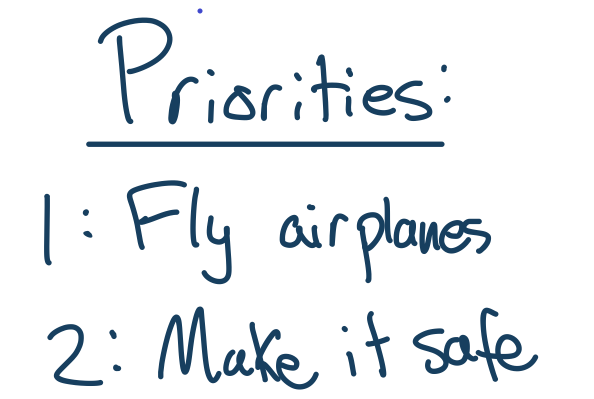
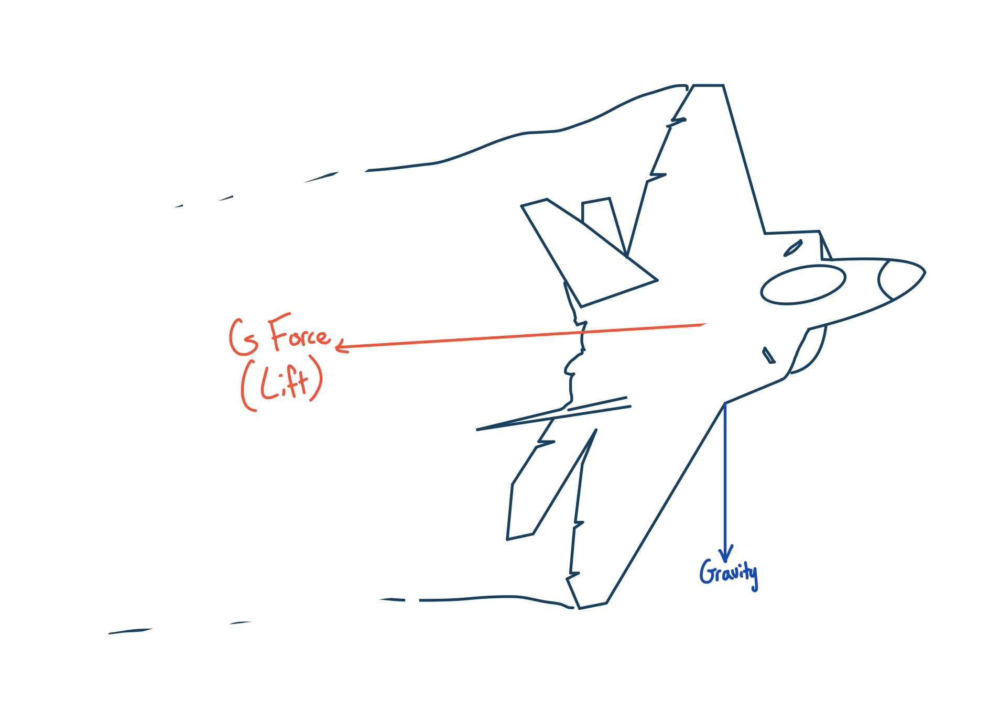
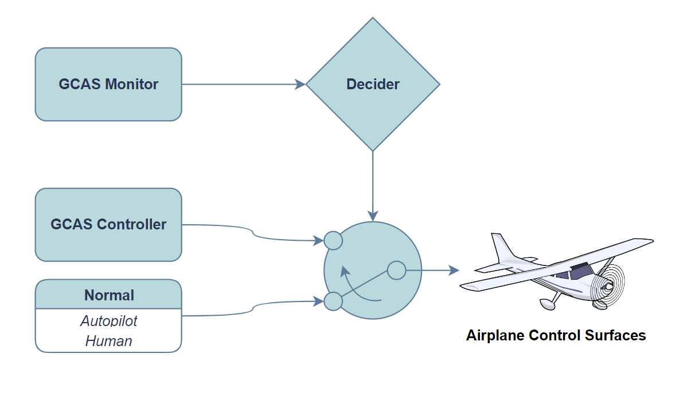
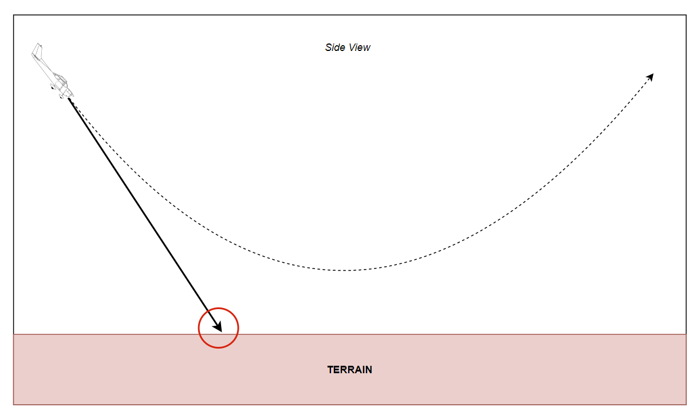

openGCAS - Introduction


Loyd R. Hook, Patrick Maley, Max Hubbard, Jude Urban September 26, 2022
Abstract
This document conveys the history, motivation, and strategies into designing ground collision avoidance systems. It also highlights the high-level architecture for a Ground Collision Avoidance System (GCAS) for use by General Aviation airplanes using openGCAS.
Considerations for Automatic Aircraft Safety Decision Making
First things first. Aircraft were made to fly, to do things in the air, and to transport people from one place to another. That's the number one priority here, bar none, that airplanes should be allowed to fly and be useful in the air! Now, if you insist on making safety the number one priority, then airplanes shouldn't be allowed to fly at all. This is because there is some non-zero risk in flying in any airplane. For large commercial airplanes, the risk is very very low. Travel in large commercial airplanes is one of the safest forms of mass travel ever devised by humans. In fact, all things being equal, it is probably safer than walking. It's a different story, however, for small airplanes. Small airplanes are actually way more dangerous, like 1000 times more dangerous (3 orders of magnitude) than large airplanes. Even when compared to traveling in a car, small airplanes are still more dangerous, but here only about 1 order of magnitude (10X) or so.

It turns out that there are some people who want to make small airplanes the safest type of airplane by not allowing them to fly at all! This scheme immediately violates our number 1 priority, that airplanes should be allowed to fly and be useful. But, if we think about things in a slightly different way, then safety doesn't go against our number one priority at all, in fact, it supports it. This is immediately obvious when you understand that crashed airplanes aren't going anywhere, and crashed pilots may not be useful anymore either. So we can, at least conceptually, make safety our number 2 priority, without conflicting with our number 1 priority, (I seriously don't understand why so many people can't get this concept). The trick will be to not interfere with normal useful aircraft operations, but to only intervene when the aircraft is in danger of immediate catastrophic uselessness (meaning in danger of a imminent crash).
This brings up the question, how do we intervene in the case of an "imminent crash"? One way that has gotten quite a bit of recent attention, is to use an airplane autopilot to maneuver in a way which keeps the aircraft from actually crashing. Another relatively popular way, is to let the pilot know that there is an imminent crash, and either depend on the pilot to figure out how to avoid the crash, or for more advanced systems, actually tell him the steps to take to avoid the crash. In general, both of these approaches fall under the general category of so called "safety systems" (or as I like to call them "digital safety decision systems" to distinguish them from other safety apparatuses).
All safety systems work in more or less the same way. First they get certain information about where the aircraft currently is and how it is currently flying. Then they use this data to perform computations that generate a prediction of whether or not the aircraft is in immediate danger. If the system predicts that the aircraft is in immediate danger, then they either command the autopilot to perform an "avoidance manuver" (which makes the system an "automatic safety system") or they tell the pilot to perform the avoidance maneuver (which makes this type of system a "manual safety system"). It turns out, unsurprisingly perhaps, that automatic safety systems are actually quite a bit more effective than manual systems at increasing safety. It also turns out that they are generally easier to design so that they don't affect normal airplane operations. So, I am most interested in automatic safety systems and would like to focus on those from here on out. This means that in our discussion we can assume we are discussing automatic type systems unless we specifically say that what we are discussing is a manual one.
Airplane Certification and its Effects on Safety System Design
Since we are talking about automatic safety systems, then we are talking about a system which will take control of an airplane. It turns out that it doesn't make a lot of sense to ask the pilot whether a safety system can take control, because the factors that have led to the condition which is causing the danger, are probably still affecting the pilot. So, if the pilot is disoriented or even temporarily incapacitated, asking them to approve an automatic maneuver that might end up saving their lives is probably not the best idea. Another reason is that if it is an actual emergency situation, and the pilot is aware of it, they are probably really busy dealing with the situation and adding one more button to push or one more decision to make will be counter productive. So, we must adhere to the design principle that we can take control of the aircraft without the pilots immediate permission. This causes all sorts of headaches for the Federal Aviation Administration (FAA) which is in charge of making sure that aircraft and the airspace that they fly in are safe as designed.
The FAA generally requires that all aircraft and all the systems on board an aircraft are thoroughly checked to make sure that if they fail they will not cause an accident. I say "generally" because some aircraft are experimental and there are different rules for them, but most aircraft are "certified aircraft" and they have to follow a strict set of rules for "certification". There are quite a few systems on board which may be very very unlikely to cause an accident on their own. One popular example is an in-flight entertainment system, which on its own would have a hard time causing a crash[^1]. For these "low risk" systems (called "DAL Level C" systems), they don't have to be checked very thoroughly at all. However, if a failure occurred in an automatic safety system, with access to the control of the airplane, they could very easily CAUSE a crash! The FAA understands this and so they require that all of these "flight critical systems" (DAL Level A), to be designed and checked with excruciating detail to make sure they will not cause a crash.
So how does certification affect safety system development? First of all, it means that the number one requirement of any safety system is that it doesn't contribute to an accident. Second of all, because the amount of work required to check and certify a system goes up exponentially with the with the system complexity, the systems should be made as simple as possible. This means that each safety system should be made as simple as possible, so generally, the way this is done is to restrict each safety system to only one piloting function.

There are many things that a pilot must do to make sure that the aircraft does not crash. They must simultaneously make sure they don't crash into another aircraft, make sure they don't crash into the ground, make sure they don't stall, they have to avoid really bad weather, etc. In addition, they have to do all of this safety planning and decision making while doing the normal and useful job of flying. We call each of these safety planning and decision tasks "safety functions". Each safety function is concerned with only one type of threat to the aircraft. So, if we are trying to make each safety system as simple as possible, then we want to restrict each safety system to only be concerned with 1 safety function. Now how do these functions interact with each other? What about times when there are conflicts between them? How do we prioritize safety functions? How is the normal useful piloting prioritized? One particular approach to answering these questions that has recently grown quite popular is the "Run-time assurance" approach which will be discussed in the next section.
RTA Decision Architecture
Before we get into the technical details of the run-time assurance approach, let's discuss the history and ways of thinking that led to its development. First of all, run-time assurance, as a concept, has a relatively long history and has went through several name changes along the way. The very basic idea was generated to solve a problem that is understood to all people who have ever coded anything before. The problem is that software fails. What makes that problem a super critical one to address is that sometimes software failures result in a risk of injury or even dying. The hard thing about software is that it doesn't fail like other "hard" systems. Everything can work flawlessly 99 times out of a 100 and then on the 100th time a special combination of inputs can drive the software to a state which it does something extreme. So, no matter how many tests you run on the software and how many times it passes, you can never be sure that the software is infallible.
Back at the early days of NASA, rockets were controlled using computerized control systems driven by software. The NASA engineers working on these rocket control systems knew that a bug in the software could cause the rocket to go out of control very quickly and possibly kill quite a few people. So, they decided to build two completely different control systems, put them both on the rocket, and switch from the main controller to a backup controller if the rocket started doing something unexpected. They figured that since the controllers were different, they wouldn't fail at exactly the same point, and so if one failed the other would very very likely work properly. This approach was used at NASA for many decades actually, and not just on rockets but also on airplanes in research control systems.
Then around 1998 or so, a couple of researchers at the University of Illinois used some rather brilliant analysis to show that a simpler backup system actually provided better immunity to errors than a more complicated one. They termed this approach the "Simplex" architecture and it was based on a few core (and also very realistic assumptions). The first assumption is that the number of bugs in a piece of software scales with software complexity. This means that the more complex a piece a software the more bugs it will contain (at least initially). The second assumption is that the rate at which bugs can be eliminated from a piece of software is initially high, but then decreases towards zero as the bugs get harder and harder to track down and understand. This has the effect that it takes an ever increasing amount of effort to find and correct a bug as the project becomes more mature. These two assumptions, plus the fact that there is always a limited amount of resources on any project, means that a structure with a simple backup system will actually be more reliable than one with a complicated backup, given an equal amount of effort between the two approaches.

The Simplex architecture approach changed thinking about software reliability and software redundancy. Then as the approach was adapted to the complex world of aviation, an extension was needed. This came in the form of the run-time assurance approach, which allows for multiple simple backup controllers each with a safety function they are monitoring. The name run-time assurance comes from the idea that in aviation, most software is verified before it is ever put on an airplane. This is the extensive checking that we discussed that the FAA require. But, using the concepts developed in the Simplex papers, checking the system at "run-time" and assuring aircraft safety with backup controllers may be a better way moving forward.
The Run-Time Assurance Approach
The run-time assurance (called RTA from here on) approach then basically contains two critical parts. The first does the checking and it is called a run-time monitor. These monitors check the state of the aircraft, perform some calculations on that state, and then determine if the underlying system has a bug (or has done something that will lead to a safety issue). The second part is a backup controller. This backup controller brings the aircraft state back into a safe place and only takes over when the monitor calculates that something is wrong.

Conceptually, RTA monitors and backup controllers can be composed of any combination of computer and/or humans. For instance, the RTA monitor can be a computer program that is constantly evaluating the aircraft location to make sure it is not in a dangerous place. If it is, the RTA can tell the pilot that he needs to fly somewhere else. When posed in this form, the RTA concept is not all that different from the myriad of warnings and system checkers that one would find on many modern aircraft today. However, for the automatic safety systems that we are concerned with in this paper, both the monitoring and the controlling is done by a computer. In this case, we like to group these two components together and call it a system, and remember that each system will be responsible for only one safety function. The most mature of these safety systems is the Ground Collision Avoidance System, or GCAS.
The Ground Collision Avoidance System
Background
Ground Collision Avoidance Systems (sometimes called "GCAS") are safety systems concerned only with the function of keeping an aircraft from colliding with the ground. Turns out this is a big problem in all of aviation and especially for small airplanes. In fact in military fighter type airplanes, colliding with the ground when there is absolutely nothing wrong with the airplane is the #1 cause of fatal aircraft accidents. This is because military fighter airplanes are highly dynamic vehicles that are capable of doing things that humans were just not designed to do. One example is "pulling G's." Pulling G's refers to the ability of the airplane to change direction very rapidly. When the airplane is changing direction, all of the things inside the airplane (including the pilot) want to keep going in a straight line. However, since the human is strapped to the airplane, the airplane applies a force to the human so that the human changes direction too. For many fighter type airplanes, this force can be up to 9 times the normal force of gravity. We call the acceleration associated with this change in motion "pulling 9 G's", or said another way, 9 times the force of gravity (G stands for gravity) is being experienced by the pilot.

Now, 9 G's is a lot. A 200lb pilot pulling 9 G's would feel like they weighed 1800lbs! In fact, even the blood in the pilots body feels the effect of all the G's, so much so, that the heart has a hard time pumping the blood up to the pilots brain. The blood then begins to collect in the pilots legs and when the brain hasn't had enough blood for only a couple of seconds, the pilot can loose consciousness (or go to sleep). When this happens there is no one flying the plane and oftentimes the plane begins descending really quickly to the ground and before the pilot wakes up, it is too late!
We call this phenomenon, G-induced loss of consciousness (or GLOC), and quite a few military pilots have unfortunately died this way. So, in 2014, the United States Air Force put an Automatic GCAS system onto all of their F-16 fighter airplanes in order to save them from this type of accident, and I am very happy to report that it has worked very well! Since 2014 there hasn't been any of these types of accidents in the F-16 and many pilots have instead been saved. One dramatic example was captured on video and released by the Air Force to the public. You can watch the dramatic video of the save here. Since 2014, the Air Force has also put Auto GCAS on the F-22 and F-35 aircraft in a bold move to save pilots and airplanes.
So what about for small civilian airplanes? While civilian pilots usually don't have to worry about GLOC, there are many other scenarios that affect civilian pilots and cause them to collide with the ground. One particularly common cause is that the pilot just doesn't know where the ground is. Oftentimes this is caused by a pilot flying into clouds or fog or maybe even just flying at night over the ocean to where the pilot just can't see the ground (I guess we should clarify for the purposes of this discussion, the ocean is also considered the ground). Other times, the pilot gets distracted or disoriented to the point that they don't understand how close they are to the ground until it's too late.
Accidents like these unfortunately kill many pilots a year in civilian aircraft. Unlike for military fighters, to this point there are no GCAS systems on small civilian aircraft. This is the main motivation for this book and this project, to bring awareness to the problem and to build GCAS systems in order to save civilian airplane pilots and passengers. So, how does GCAS work?
How GCAS Works
We have already discussed the our priorities in making safer airplanes, we have discussed the run-time assurance approach of using simple safety systems which perform only one safety function, and we have discussed that these safety systems contain a monitor and a controller. So, the good news is that you already know quite a bit about how a GCAS works just from the things that we have already discussed! That being said I also think it's important to get into the nitty gritty details, so that we can understand how the things we already learned affect the design of a GCAS.
The GCAS Controller
As we have mentioned, GCAS contains two major parts, the monitor and the controller. I want to begin by describing the controller because much of the monitor has to be based on how the controller acts and there are a couple of options based on which type of airplane the GCAS is designed for. For example, the controller for GCAS on the Air Force fighter type airplanes are all autopilots which roll the airplane upright and pull away from the ground. After the airplane is upright, its wings are parallel with the ground, and the nose is pointing up away from the ground the airplane begins a climbing maneuver in order to clear any mountains or ground in front of it. This single maneuver is selected for the air force fighters because these airplanes have large jet engines that produce a large amount of thrust compared to the weight of the airplane. This means that these airplanes are able to climb really well Since there is only one possible maneuver, when the GCAS monitor predicts that a ground collision is about to happen, the GCAS controller simply performs this wings level climbing maneuver.

Unfortunately, larger transport airplanes and civilian airplanes are not able to climb as well as fighter type airplanes. However, because they are generally going quite a bit slower than fighter type airplanes they can usually turn really fast. For these slower, lower power airplanes, the GCAS controllers often are able to perform between 3 and 5 maneuvers. They can still perform a wings level climb, but they can also perform turning maneuvers which take advantage of the excellent turning ability of these airplanes. Generally, at least 3 maneuvers: a wings level climb, a right turning climb, and a left turning climb are available as options for use by the GCAS controller. In this case, the GCAS monitor not only needs to figure out if a ground collision is about to happen but also needs to tell the controller which maneuver it should perform. Don't worry though, figuring out which maneuver to perform is not any more complicated than figuring out if a ground collision is about to happen in the first place... It just takes a little more processing time.
The GCAS Monitor
The GCAS monitor is built around a prediction of the aircraft trajectory. The predicted trajectory is step by step projection into the future of where the airplane will be and how it will be oriented. One of the most surprising things that people learn about this predicted trajectory is that it is not a prediction of how the airplane will fly if it continues flying as it currently is. Instead, the computed trajectory is a prediction of how the airplane will fly if the GCAS controller takes over. In this way the GCAS monitor can accurately say whether the GCAS controller can avoid the ground and if so, by how much.
Now, in the real world we cannot predict things with absolute certainly. For instance in aviation, a wind gust can cause the airplane to temporarily go in random ways and this we cannot predict. In fact, in the real world we can't even tell exactly where we are at any given time, or exactly how fast we are going so that any future prediction will be off just based on the erroneous starting point. This makes predicting the trajectory difficult and imprecise. That means we have to have a buffer so that any errors in our predictions don't end up causing the system to fail. So, if the predicted trajectory comes within a distance of the ground equal to or less than this buffer then the GCAS monitor will predict that a ground collision is about to happen. We call this buffer the "Terrain Clearance Buffer" or TCB. If the GCAS controller only has one maneuver, then if the predicted trajectory gets closer to the ground than the TCB then the GCAS monitor asks the GCAS controller to perform that maneuver. In the case of multiple maneuvers, the trajectory for each of the maneuvers is computed and compared to the ground. In this case, all of the maneuvers have to be within the terrain clearance buffer in order for the monitor to ask the GCAS controller to perform its maneuver. But which does it ask the controller to perform? Oftentimes, the monitor will ask the controller to fly the maneuver whose prediction entered the TCB last. Other options are that the monitor could ask the controller to fly the maneuver that has the greatest separation from the terrain.
In order for the monitor to calculate how far the predicted trajectory is away from the ground, the monitor needs to know where the ground is. For this the monitor uses very large databases of ground elevations which cover the majority of the earth. When the trajectory is predicted, the latitude and longitude of the points along the trajectory are calculated. These latitudes and longitudes are then fed into a ground elevation database and the ground altitude underneath that point in the trajectory is returned. The predicted altitude of the trajectory point is then compared to the ground elevation and if the difference between the two is less than the TCB, the monitor should determine that a ground collision along that maneuver should be avoided.
Ground Collision Avoidance in an RTA architecture
This section highlights the high-level architecture for the Real-Time Assurance (RTA) for openGCAS. The high level RTA figure contains a generic diagram for any RTA control system. The RTA is responsible for selecting between a number of different control systems in real time. For example, the diagram contains one primary control system called the Complex Function. The Complex Function is either human control or autopilot. Running in parallel to the Complex Function are the Recovery Control Functions. Their sole purpose is to provide an escape route in a potentially fatal scenario. In addition, a monitor is required to select between the different control systems in an imminent fatal event. The selector is known as the Safety Monitor.
Now, the generic diagram described in the previous section will be translated into a specific implementation for openGCAS. At any given moment, both the GCAS Monitor and the GCAS Controller are evaluating the scenario at present, planning an escape to a fatal event should one arise. The GCAS Monitor's role is a high level evaluation of the situation as a whole, performing calculations to Determine Need to Avoid (DNA.) The GCAS Monitor's evaluation of the situation is sent to the "Decider", where a switch can be toggled between normal (human or autopilot) control and GCAS control.

openGCAS Architecture
The state of the airplane will be given by sensor data, which includes position, velocity, altitude, and so on. This state information feeds the Trajectory Prediction Algorithm (TPA) with necessary data. Meanwhile, the surroundings and TPA provide the Map Manager with information about the environment. The output of these two systems will be sent to a comparator, where Determine Need to Avoid (DNA) will be calculated. DNA is a Boolean value based on the output of this comparator. The airplane's autopilot control coupler will switch between GCAS and normal (human or autopilot control) when necessary.

TPA
The purpose of the Trajectory Prediction Algorithm (TPA) calculate a trajectory in which an obstacle is avoided. The figure below shows a lateral view of the Trajectory Prediction Algorithm's calculated trajectory. The TPA's calculated path is represented by the dotted line.

Collision Avoidance Maneuvers

The purpose of TPA figure is twofold: visualize the TPA's three potential maneuvers, and to introduce the concepts of TPA points. Beginning with the TPA's three potential maneuvers, it should be noted that the figure shows the same scenario as the collision avoidance manuever shown below, but from an overhead view. There are three potential maneuvers that the TPA will consider:
- Pull up, bank left
- Pull up, wings level
- Pull up, bank right
The process by which a maneuver is selected will be defined in the section Last Man Standing.
TPA Points

This section documents the process by which a TPA point is defined. To begin, a circular surface area of an arbitrary radius will be defined. This finite domain will be cross-referenced with terrain data. The largest data point in the terrain data (which happens to be the highest elevation) will be defined as the TPA Point for that particular location. This coarsening, discretization of terrain data is done to remove any uncertainties in the terrain data. By selecting the highest point in a given area, the system is assuming the worst case scenario at all times. This adds to the safety cushion threshold of the system, and thus, makes it more likely to save lives.
Decider
This section describes the process by which the GCAS Monitor flags a potentially fatal scenario as TRUE, taking control of the airplane from the Complex Function (human or autopilot.)

Defining the Takeover Threshold
The figure showing the decider depicts a fatal scenario where the GCAS Monitor will flag the scenario as TRUE and allow the GCAS Controller to take over the airplane. There are few critical variables in this scenario to be understood:
- Closest Point of Approach (CPA) - The shortest distance between the TPA's trajectory and the terrain data.
- Terrain Clearance Buffer (TCB) - A predefined, minimum altitude threshold between the airplane and the terrain.
You can observe the CPA in the image, which is the distance between the dotted line (TPA maneuver trajectory) and the TPA Points in red. The TCB can be seen in blue. Notice that the trajectory clears all but one of the Terrain Clearance Buffer instances. In this example, the maneuver being evaluated will flag NTA (Need To Avoid) as TRUE because it surpasses the minimum threshold for distance.
Last Man Standing
Keeping in mind that three potential maneuvers are being evaluated at all times, here is where the concept of "last man standing" becomes a pivotal element in the system. By default, the Boolean value of NTA (Need To Avoid) of each controller is FALSE. In the event of a fatal scenario, each controller has a independent DNA (Determine Need to Avoid) function. As a fatal scenario begins to unfold, each controller's NTA will independently flag as TRUE if the defined threshold (TCB) is surpassed. The final controller's NTA to be flagged as TRUE will be used for the collision avoidance maneuver. This is done to decrease unnecessary nuisance in the system if an event does not need to be avoided.
Pseudocode for DNA
bool determineNeedToAvoid(TPA_trajectory,
TPA_point,
terrainClearanceBuffer)
{
if(TPA_trajectory - TPA_point < terrainClearanceBuffer)
{
// we need to avoid
// potentially fatal scenario
return true;
}
else
{
// no need to avoid this scenario
// airplane is above the threshold
return false;
}
}
GCAS Controller

The GCAS Controller figure above shows the real-time controller for each potential scenario running simultaneously. To reiterate, each scenario is being evaluated individually. The last controller to be flagged NTA will be the "Last Man Standing." This particular controller will take control of the airplane and avoid the fatal event.
[^1]: In flight entertainment systems run on separate power systems from other more critical systems so that a failure in the in-flight entertainment system wouldn't cause a failure of a more critical one.